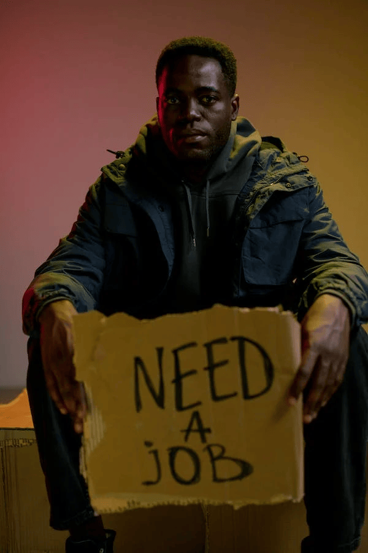

O trabalho decente deve ser entendido como a atividade humana que cumpre com as formalidades legais para seu exercício,
respeitados os direitos e princípios constitucionalmente garantidos e internacionalmente adotados, em Documentos da OIT – Organização Internacional do Trabalho.

Importância dos objetivos de Desenvolvimento Sustentável
Os 193 países que fazem parte da ONU têm guiado suas escolhas por uma nova agenda: os Objetivos de Desenvolvimento Sustentável (ODS).
Apresentada em setembro de 2015, na Cúpula de Desenvolvimento Sustentável da Assembleia Geral da ONU, a agenda contém 17 metas.
Alguns exemplos são: eliminar a pobreza, combater a fome e garantir uma educação para todos. Esses objetivos devem ser realizados por todos os países até 2030.
A importância do trabalho para a sociedade e economia?
Na sociedade, o trabalho é essencial para o desenvolvimento econômico e o crescimento sustentável. Gera renda e riqueza, promove a distribuição de recursos e o aumento do bem-estar social. Além disso, é responsável pela inovação e pelo avanço tecnológico, impulsionando a competitividade e a produtividade.
No longo prazo, a desigualdade de renda e de oportunidades prejudica o crescimento econômico e o alcance do desenvolvimento sustentável. Os mais vulneráveis, muitas vezes, têm menores expectativas de vida e apresentam dificuldades de se libertarem de um círculo vicioso de insucesso escolar, baixas qualificações e poucas perspectivas de empregos de qualidade.
O que é desigualdade econômica?

A desigualdade econômica pode ser entendida como a distribuição desigual de renda em determinada área, sendo influenciada por fatores históricos, culturais, sociais e pela falta de investimento em políticas públicas relacionadas à questão.